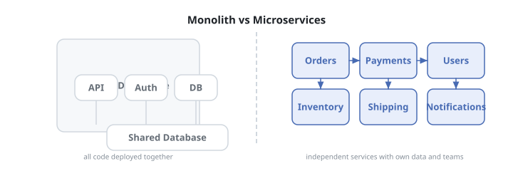
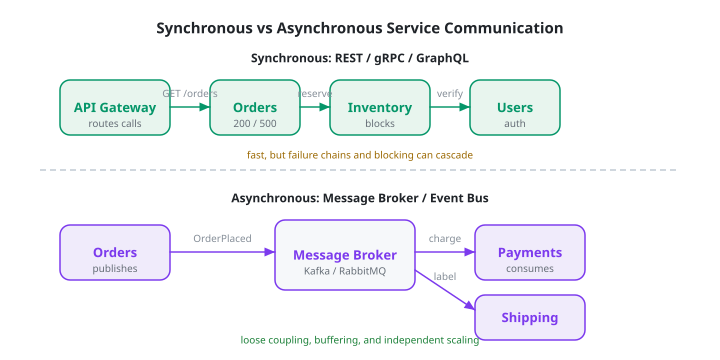
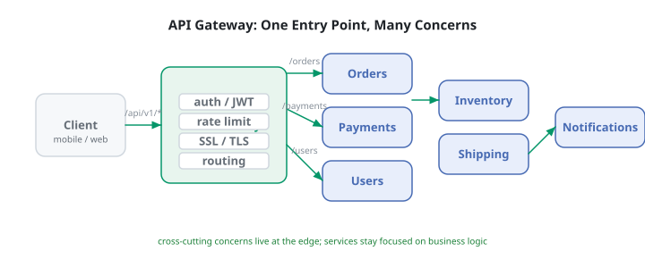
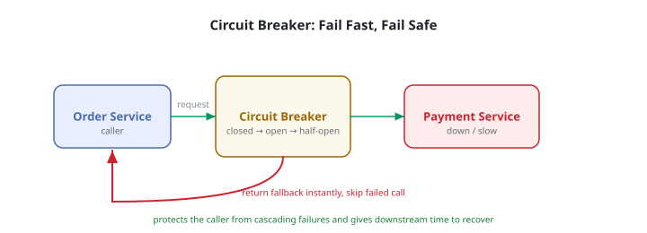
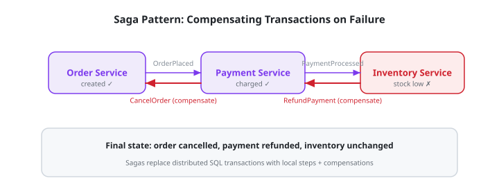

Microservices Basics: Service Boundaries & Communication
Chapter 1
Introduction
Microservices are an architectural style where an application is built as a suite of small, independent services. Each service owns a bounded piece of business capability, runs in its own process, and communicates over a network. This tutorial focuses on the two decisions that matter most: where to draw service boundaries and how services should talk to each other.
Before you start
- Comfortable with Node.js and Express.
- Understand HTTP, REST, and JSON.
- Basic knowledge of Docker and databases.
What you'll learn
- ✓ When to choose microservices over monoliths
- ✓ How to draw service boundaries by capability
- ✓ Synchronous vs asynchronous communication
- ✓ API gateway, service discovery, and resilience
- ✓ Distributed transactions with sagas
- ✓ Real-world food delivery capstone
Real-world systems built this way
- Amazon split its retail system into services so teams could deploy independently.
- Netflix runs hundreds of microservices for playback, recommendations, billing, and search.
- Uber moved from a single monolith to services for dispatch, payments, maps, and pricing.
- Food delivery apps (DoorDash, Deliveroo) separate order, restaurant, delivery, and payment services.
Chapter 2
Monolith vs Microservices
Most successful products start as monoliths. A monolith is simpler to build, test, and deploy. Microservices become valuable when the team or the system grows large enough that coordination costs outweigh the operational overhead of distribution.
Monolith vs microservices

When monoliths win
- Small team, unclear product boundaries.
- Need fast iteration and simple debugging.
- No requirement for independent scaling of parts.
- Can still be modular inside one codebase.
When microservices win
- Multiple teams need independent release cadence.
- Different parts scale differently (CPU vs memory vs I/O).
- Need to use different databases per capability.
- Failure must be contained to one area of the product.
Warning signs of premature splitting
- Services are split by technical layer (frontend service, backend service) instead of business capability.
- Every feature change touches five repositories.
- Local development requires a Kubernetes cluster.
- Network failures are more common than business-logic bugs.
Quiz: Microservices are always more scalable than monoliths.
Chapter 3
Designing Service Boundaries
A service boundary defines what a service owns and what it does not. Good boundaries reduce coupling, make failures local, and let teams work independently. The most common mistake is splitting too finely.
Rules of thumb
- Bounded context : group code that changes for the same business reason. An "Order" means something different to the warehouse than to payments.
- Single responsibility : a service should do one thing a customer would recognize, such as "take payments" or "send notifications".
- Independent deployability : if two services always must deploy together, they may be one service.
- Database per service : services do not share tables. They share data by API or events.
// BAD:
thin CRUD services // UserService,
OrderService,
ProductService // all
called directly by the frontend // GOOD:
capability-aligned services // Orders
service: owns order lifecycle // Payments
service: owns charging cards + refunds // Fulfillment
service: owns warehouse + shipping // Notifications
service: owns email,
SMS,
push// Domain
event examples for an e-commerce platform OrderPlaced
{ orderId,
items,
customerId }
PaymentProcessed
{ orderId,
paymentId,
status }
InventoryReserved
{ orderId,
sku,
quantity }
OrderShipped
{ orderId,
trackingNumber }
NotificationSent
{ userId,
channel,
message }Exercise: split a food delivery app
Given features like restaurant menus, cart, payments, driver assignment, real-time tracking, and ratings, list the services you would create. Try to name them by capability, not by data entity.
Chapter 4
Inter-Service Communication
Services communicate in two fundamental ways. Synchronous calls are simple but create coupling. Asynchronous messaging decouples services in time and scale.
Synchronous vs asynchronous communication

Synchronous: REST / gRPC / GraphQL
- Caller waits for the response.
- Simple request/response semantics.
- Can create long dependency chains.
- Best for read operations and auth checks.
Asynchronous: events / message broker
- Caller publishes event and moves on.
- Consumers process at their own pace.
- Needs durable queue and retry logic.
- Best for writes, notifications, and long jobs.
// Synchronous
HTTP call between Node.js services const axios = require('axios');
async function getUserProfile(userId)
{ const
{ data } = await axios.get( `${process.env.USERS_SERVICE_URL}/users/${userId}`,
{ timeout: 2000 }
);
return data;
} // Caller
handles failure directly app.get('/orders/:id',
async (req,
res) => { const order = await db.findOrder(req.params.id);
try
{ order.customer = await getUserProfile(order.customerId);
res.json(order);
}
catch (err)
{ res.status(503).json({ error: 'user service unavailable' }
);
}
});// Asynchronous
event publishing const amqp = require('amqplib');
async function publishOrderPlaced(order)
{ const conn = await amqp.connect(process.env.RABBITMQ_URL);
const channel = await conn.createChannel();
await channel.assertExchange('orders', 'topic',
{ durable: true }
);
channel.publish('orders', 'order.placed',
Buffer.from(JSON.stringify({ orderId: order.id,
items: order.items,
customerId: order.customerId,
placedAt: new Date().toISOString() }
)));
} // Payments
service consumes the event async function consumeOrderPlaced()
{ const conn = await amqp.connect(process.env.RABBITMQ_URL);
const channel = await conn.createChannel();
await channel.assertQueue('payments.process');
await channel.bindQueue('payments.process', 'orders', 'order.placed');
channel.consume('payments.process',
async (msg) => { const event = JSON.parse(msg.content.toString());
await processPayment(event);
channel.ack(msg);
}
);
}Choosing the right pattern
- Synchronous : user login, profile lookup, feature flags, aggregation for reads.
- Asynchronous : order placed → charge → reserve stock → ship → notify.
- Never : chain more than three synchronous calls in a critical path.
Chapter 5
Data Ownership
In a microservice architecture, data is not shared through a single database. Each service owns its data and exposes it through an API or events. This is the most important rule for keeping services loosely coupled.
Database per service
-
The
Orders
service owns the
orderstable. -
The
Users
service owns the
userstable. -
The
Inventory
service owns the
stocktable. - If Orders needs a user's name, it asks the Users service or caches a read-only copy.
// Anti-pattern:
shared table // SELECT *
FROM users // order
service reading user table directly // Correct:
service owns its data,
exposes API // Orders
service calls Users service via HTTP or listens to UserUpdated events // Event-sourced
example: Inventory publishes stock changes async function reserveStock(orderId,
items)
{ for (const item of items)
{ const row = await db.stock.findByPk(item.sku);
if (row.quantity < item.qty) throw new Error('out of stock');
await row.decrement('quantity',
{ by: item.qty }
);
}
await publish('inventory.reserved',
{ orderId,
items }
);
}Eventual consistency
When services use events, data becomes temporarily inconsistent. An order may exist before payment is confirmed. That is normal. Design your UX around states and retries, not global locks.
Chapter 6
API Gateway
An API gateway is a single entry point for clients. It handles cross-cutting concerns so individual services do not have to repeat them. It can also aggregate calls to reduce chatty client traffic.
Gateway routing and concerns

// Lightweight
Express gateway example const express = require('express');
const
{ createProxyMiddleware } = require('http-proxy-middleware');
const jwt = require('jsonwebtoken');
const app = express();
function authenticate(req,
res,
next)
{ const token = req.headers.authorization?.split(' ')[1]
;
try
{ req.user = jwt.verify(token,
process.env.JWT_SECRET);
next();
}
catch
{ res.status(401).json({ error: 'Unauthorized' }
);
}
} app.use('/orders',
authenticate,
createProxyMiddleware({ target: process.env.ORDERS_SERVICE_URL,
changeOrigin: true }
));
app.use('/payments',
authenticate,
createProxyMiddleware({ target: process.env.PAYMENTS_SERVICE_URL,
changeOrigin: true }
));
app.listen(8080);Gateway responsibilities
- Authentication : validate JWT or session tokens at the edge.
- Rate limiting : prevent abuse before it reaches services.
- SSL termination : handle TLS at the edge.
- Routing : map public URLs to internal service URLs.
- Request aggregation : combine several service calls for the client.
- Protocol translation : REST in, gRPC out to services.
Real-world products
Kong, NGINX, Envoy, Traefik, and AWS API Gateway are common gateway tools. In Kubernetes, an Ingress controller often plays the gateway role, while a service mesh (Istio, Linkerd) adds mTLS and traffic policies between services.
Chapter 7
Resilience Patterns
Networks are unreliable. Microservices multiply the chance of failure because every service call crosses the network. Resilience patterns keep a local failure from becoming a system-wide outage.
Circuit breaker protects callers

Patterns
- Circuit breaker : stop calling a failing service for a while.
- Retry with backoff : retry transient failures, but not blindly.
- Timeout : fail fast instead of waiting forever.
- Fallback : return cached or degraded data.
- Bulkhead : isolate resources so one slowdown does not starve others.
Example: simple timeout + fallback
async function getUserWithFallback(userId)
{ try
{ const
{ data } = await axios.get( `${USERS_URL}/users/${userId}`,
{ timeout: 500 }
);
return data;
}
catch (err)
{ // Return
stale cache or placeholder return cache.get(`user:${userId}`) || { id: userId,
name: 'Guest' }
;
}
}// Circuit
breaker sketch (state machine) class CircuitBreaker
{ constructor(fn,
{ failureThreshold,
resetTimeout }
)
{ this.fn = fn;
this.failureThreshold = failureThreshold;
this.resetTimeout = resetTimeout;
this.state = 'CLOSED';
// CLOSED,
OPEN,
HALF_OPEN this.failures = 0;
this.nextTry = Date.now();
}
async call(...args)
{ if (this.state === 'OPEN')
{ if (Date.now() < this.nextTry) throw new Error('circuit open');
this.state = 'HALF_OPEN';
}
try
{ const result = await this.fn(...args);
this.success();
return result;
}
catch (err)
{ this.failure();
throw err;
}
} success()
{ this.failures = 0;
this.state = 'CLOSED';
}
failure()
{ this.failures++;
if (this.failures >= this.failureThreshold)
{ this.state = 'OPEN';
this.nextTry = Date.now() + this.resetTimeout;
}
} }Chapter 8
Distributed Transactions
You cannot run a single SQL transaction across microservices. A saga coordinates a long-running business process as a sequence of local transactions, with compensating actions if a step fails.
Saga with compensating transactions

Saga choreography vs orchestration
- Choreography : each service reacts to events from others. Simpler at first, harder to trace.
- Orchestration : a central saga coordinator tells each service what to do. Easier to reason about, but the orchestrator is a new component.
// Choreography
saga: services listen to each other's events // OrderPlaced →
PaymentProcessed → InventoryReserved → OrderConfirmed // Order
service async function placeOrder(order)
{ const created = await db.orders.create(order);
await eventBus.publish('OrderPlaced',
{ orderId: created.id,
items: created.items,
total: created.total }
);
} // Payment
service async function onOrderPlaced(event)
{ try
{ const payment = await chargeCard(event);
await eventBus.publish('PaymentProcessed',
{ orderId: event.orderId,
paymentId: payment.id }
);
}
catch (err)
{ await eventBus.publish('PaymentFailed',
{ orderId: event.orderId }
);
}
} // Inventory
service async function onPaymentProcessed(event)
{ try
{ await reserveStock(event.orderId);
await eventBus.publish('InventoryReserved',
{ orderId: event.orderId }
);
}
catch (err)
{ await eventBus.publish('InventoryReservationFailed',
{ orderId: event.orderId }
);
}
} // Compensation
handlers async function onPaymentFailed(event)
{ await db.orders.update( { status: 'cancelled' },
{ where: { id: event.orderId }
} );
}
async function onInventoryReservationFailed(event)
{ const order = await db.orders.findByPk(event.orderId);
await refundPayment(order.paymentId);
await db.orders.update( { status: 'cancelled' },
{ where: { id: event.orderId }
} );
}Design checklist
- Every action has an idempotent compensating action.
- Events are durable and at-least-once delivered.
- Consumers are idempotent because the same event may arrive twice.
- Human visibility: log every saga step and its current state.
Chapter 9
Observability
When a request crosses five services, logging into each server to debug is impractical. Observability gives you a shared view: logs, metrics, and traces.
Logs
Structured records of events, errors, and decisions.
- Use JSON format.
-
Include
trace_idin every log line. - Centralize with ELK, Loki, or Datadog.
Metrics
Numbers over time: request rate, latency, errors.
- Track the "golden signals": latency, traffic, errors, saturation.
- Use Prometheus + Grafana or cloud monitoring.
Traces
Follow a single request across services.
-
Generate a
trace_idat the gateway. - Propagate it in HTTP headers.
- Visualize with Jaeger, Zipkin, or Tempo.
// Propagating
trace context between services async function callInventory(order,
traceId)
{ const
{ data } = await axios.post( `${INVENTORY_URL}/reserve`,
{ orderId: order.id,
items: order.items },
{ headers: { 'X-Trace-Id': traceId, 'X-Request-Id': generateId() },
timeout: 1000 }
);
return data;
} // Logging
with trace context app.use((req,
res,
next) => { req.traceId = req.headers
['x-trace-id'] || generateId();
logger.info({ traceId: req.traceId,
path: req.path }, 'request started');
next();
}
);Why it matters
A distributed system fails in ways no single test can predict. Observability turns "the site is slow" into "orders service is timing out on inventory calls for premium users between 14:00 and 14:15".
Chapter 10
Capstone: Food Delivery System
Build a simplified food delivery backend with four services, an API gateway, and an event broker. The focus is on boundaries and communication, not UI.
1. What is this project?
This capstone is a simplified food delivery backend built as a microservices system. Customers browse restaurants and place orders through an API gateway, while dedicated services handle orders, payments, delivery, and restaurant data. Services communicate both synchronously through the gateway and asynchronously via events, so the system stays loosely coupled even when workflows span multiple services.
2. What it covers?
- Service boundaries : splitting the domain by capability, not by data entity.
- API gateway : authenticating users and aggregating responses from services.
- Synchronous communication : REST calls with timeouts and fallbacks.
- Asynchronous communication : publishing and consuming domain events.
- Saga pattern : coordinating order, payment, and delivery through events and compensations.
- Observability : propagating trace IDs across service calls.
3. How it is done?
The backend is composed of a gateway plus four capability-aligned services. The gateway routes client requests and aggregates order status, while each service owns its data and reacts to events from the shared event broker.
Architecture overview
- API Gateway : Express app that authenticates users and routes to services.
- Restaurants service : menus, availability, opening hours.
- Orders service : cart, pricing, order lifecycle.
- Payments service : charge cards, refunds.
- Delivery service : driver assignment, ETA, order tracking.
- Event broker : RabbitMQ or Redis Streams for async events.
Gateway aggregation
// Gateway:
aggregate order status from multiple services app.get('/orders/:id/status',
async (req,
res) => { const traceId = req.headers
['x-trace-id'] || generateId();
const
[order,
payment,
delivery] = await Promise.all([ callService('orders', `/orders/${req.params.id}`,
traceId),
callService('payments', `/payments?orderId=${req.params.id}`,
traceId),
callService('delivery', `/deliveries?orderId=${req.params.id}`,
traceId).catch(() => null) ]
);
res.json({ orderId: order.id,
status: order.status,
paymentStatus: payment?.status || 'unknown',
driver: delivery?.driverName || null,
etaMinutes: delivery?.etaMinutes || null }
);
}
);
async function callService(name,
path,
traceId)
{ const url = process.env
[`${name.toUpperCase()}
_URL`]
;
const
{ data } = await axios.get(`${url}${path}`,
{ headers: { 'X-Trace-Id': traceId },
timeout: 1000 }
);
return data;
}Orders service publishes events
// Orders
service: publish event and own order data async function placeOrder(req,
res)
{ const order = await db.orders.create({ customerId: req.user.id,
restaurantId: req.body.restaurantId,
items: req.body.items,
total: calculateTotal(req.body.items),
status: 'pending' }
);
await eventBus.publish('OrderPlaced',
{ orderId: order.id,
customerId: order.customerId,
total: order.total,
placedAt: new Date().toISOString() }
);
res.status(201).json(order);
}4. What did we learn from this capstone project?
- Microservices should be split by business capability so each service owns one thing.
- An API gateway hides internal services and reduces chattiness for clients.
- Event-driven workflows keep services decoupled in time and failure.
- Sagas with compensating actions replace distributed SQL transactions.
- Trace IDs make it possible to follow a single request across multiple services.
5. How can I enhance this project in the future?
- Add a notifications service that listens to events and sends email or SMS.
- Add Redis caching for restaurant menus and aggregated order status.
- Deploy each service with Docker Compose and add health checks.
- Generate and visualize traces in Jaeger or Zipkin.
- Introduce a saga orchestrator for complex order fulfillment workflows.
Checkpoint
Model the four services, implement the gateway status endpoint with a timeout fallback, and publish or consume at least one domain event between the orders and payments services.